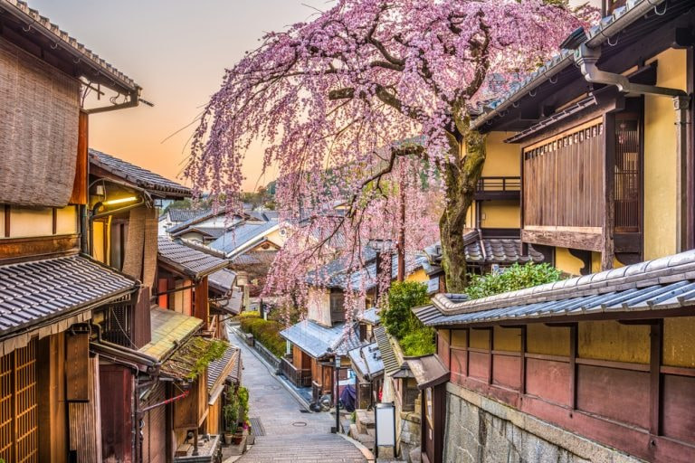

El viaje a través de Noruega fue una experiencia inolvidable. Las montañas escarpadas que se sumergen
en aguas tranquilas y profundas crean un paisaje que parece sacado de un cuento de hadas. La primera
parada fue en Geirangerfjord, un sitio declarado Patrimonio de la Humanidad por la UNESCO. Las rutas
de senderismo son abundantes y ofrecen vistas espectaculares a cada paso.
Es crucial llevar buen calzado y estar preparado para cambios climáticos repentinos, incluso en
verano, para disfrutar al máximo de la majestuosidad de la naturaleza noruega.
El encanto de los Mercados de Kioto

Calle Japonesa tradicional en antaño
Kioto, la antigua capital imperial de Japón, es una ciudad que fusiona a la perfección la tradición
con la modernidad. El mercado de Nishiki, conocido como "la cocina de Kioto", es un festín para los
sentidos. Un pasillo estrecho lleno de puestos que venden de todo, desde encurtidos locales hasta
marisco fresco y dulces tradicionales.
Pasear por el barrio de Gion al atardecer ofrece la posibilidad de ver a alguna geisha o maiko
dirigiéndose a sus citas. Es un recordatorio viviente de la rica historia cultural de la ciudad.
Soy un viajero apasionado por descubrir nuevas culturas y paisajes. ¡Acompáñame en esta aventura!